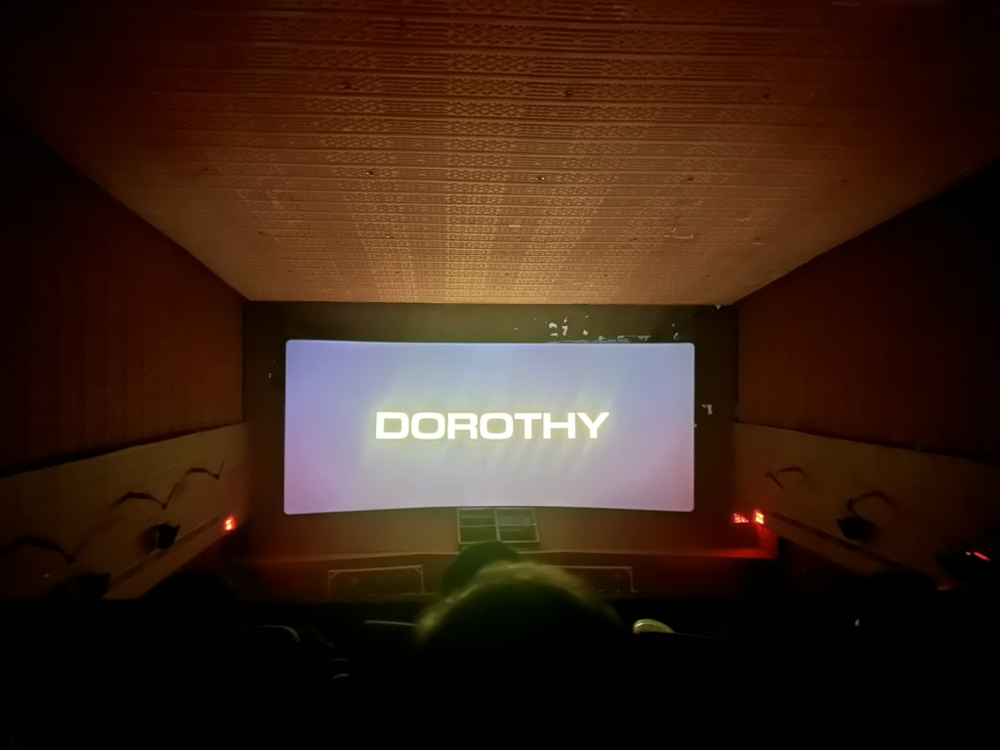
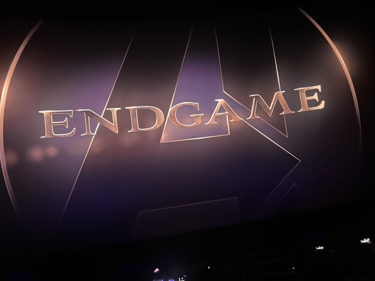

Date: September 24-28, 2026
Location: Chennai, India
This weekend was quite exciting, I was at home in Chennai since I had some Visa Appointments, my girlfriend came to visit and I got to watch some amazing movies and have good food.
Movie: Mandaadi (Tamil) (wiki | imdb)
Cinema: Santham @ Sathyam Cinemas, Chennai
Very interesting movie, nice action and supprisingly good visual effects. Enjoyed the movie a lot.
Went to KOSMO cafe afterwards for the Cold Milo and Mac and Cheese always good and also tried a new cheese cake it was fine
Nothing much, had work and in the evening went for quick shopping and for dinner had really good parotta and kari dosa after a long time at this small shop outside Puzhuthivakkam MRTS station, hated the kari dosa's and parotta's in Banglore but finally felt inner peace.
Movie: Dorothy (Tamil) (wiki | imdb)
Cinema: Kumaran Theatre Madipakkam, Chennai

Absolutely fucking loved this movie. Always been a fan of Karthick Subbaraj and went completely blind didn't even see the teaser/trailer and this was one of the most beautiful movie I've seen in some time. and Ilaiyaraaja's music is always a treat to the ears.
Also went to this Cinema after covid for the first time, it's a local theatre in Madipakkam but now they have upgraded the screen and sound system and the experience was really good.
Went to Erode Amman Mess @ Velachery for dinner, had Idiyappam Kotu after years, it was good, later went to The Nini Cafe for desserts. Overall W day
Movie: Modha Rathri (Tamil) (wiki | imdb)
OTT: Netflix
Felt disappointed that I missed this in theatres, but the movie was great and very fun to watch, showed that Tamil cinema is in a generatioal run right now
Went to drop my girlfriend at the airport and had a good weekend overall.
Movie: Avengers Endgame: Encore (English) (wiki | imdb)
Cinema: IMAX (Audi 5) @ Palazoo, Chennai

Went to watch it with my best friend, I saw Endgame in the same theatre with him when it released in 2019 and it was a great experience and we got to relive it after 7yrs again.
Got me excited for Doomsday with the extended scenes, marvel's really trying very hard and hope they deliver.
That's all the Movies and the Weekend, enjoyed the great movies and good food.
Srivatsav Auswin